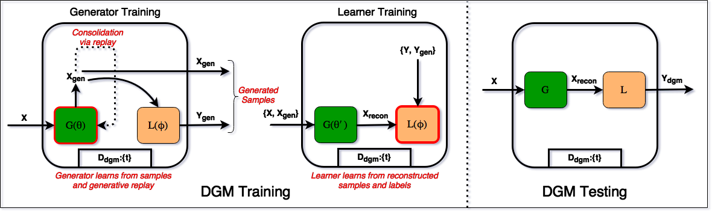

Deep Generative Dual Memory Network for Continual Learning
Nitin Kamra, Umang Gupta, Yan Liu
Posted on November 27, 2017
TL;DR: A dual memory architecture inspired from human brain to learn sequentially incoming tasks, while averting catastrophic forgetting.
This blog post is a summarized version of our recent paper: Deep Generative Dual Memory Network for Continual Learning. It conveys the bigger picture and some main results of our work. For details of the experiments, neural network architectures and detailed analysis, please refer to the full paper.

Catastrophic Forgetting in Neural Networks
Today, neural networks can learn multiple tasks when trained on them jointly, but cannot maintain performance on learned tasks when tasks are presented one at a time (a phenomenon termed as catastrophic forgetting). Without a way to avert catastrophic forgetting, a learning system needs to be presented with all the training data at once, and cannot be retrained on new data thereafter, unless all the previous data is also stored and presented again at the time of retraining. Hence, it is an important and challenging problem which needs to be solved in order to enable systems to learn continuously from incoming data.
Formal Setup
Formally, our continual learning problem setting can be called sequential multitask learning. It is characterized by a set of tasks \(\mathbb{T}\), which are to be learnt by a model parameterized by weights \(\theta\) (e.g. a neural network). In this work we mainly consider supervised learning tasks i.e. task \(t \in \mathbb{T}\) has training examples: \(\{x_i^t, y_i^t\}_{i=1:N_t}\) for \(x_i^t \in \mathcal{X}\) and \(y_i^t \in \mathcal{Y}\), but our method easily generalizes to unsupervised learning settings. The training examples for each task come sequentially i.e. the model sees examples from one task at a time, and the total number of tasks \(|\mathbb{T}|\) is not known a priori. At test time, the model can be asked to predict the label \(y^t \in \mathcal{Y}\) for any previously seen/unseen example \(x^t \in \mathcal{X}\) from any task \(t \in \mathbb{T}\). Our goal is to devise an algorithm which learns these tasks sequentially while avoiding catastrophic forgetting and can achieve a test loss close to that of a model which learnt all the tasks jointly.
Finite memory assumption: Since all physical systems have finite memory, we assume that any training algorithm employed in this setting can store some examples from each task if needed, but the storage size (\(N_{max}\)) is limited and might be smaller than the total number of examples from all tasks combined \(\left( \sum_{t=1}^{|\mathbb{T}|} N_t \right)\). So, algorithms are not allowed to store all training examples and re-learn on them when new tasks arrive. The same restriction applies to methods employing generative models i.e. the generative models are not allowed to keep more than \(N_{max}\) examples in storage (generated + stored combined).
How humans deal with catastrophic forgetting?
Sparse representations: It was initially believed that the underlying cause of forgetting was the distributed shared representation of tasks via network weights - the very property that gives neural networks their remarkable abilities to generalize well. Many previous works have attempted to remedy the issue by reducing representational overlap via activation sharpening algorithms and sparse activations (e.g. dropout) to create sparse feature representations. But, it is well known that natural cognitive systems are also connectionist in nature and yet they only forget gradually and not catastrophically. For instance, humans demonstrate catastrophic forgetting only in cases of direct brain damage, but otherwise forget very gradually and systematically. Frequently and recently encountered tasks tend to survive much longer in the human memory, while those rarely encountered are slowly forgotten. Hence we believe that sparsifying representations would not address the problem. Instead, neuroscientific evidence suggests that human brain has evolved mechanisms to separately learn on new incoming data and consolidate the learning with previous knowledge to avert catastrophic forgetting:
- Complementary learning systems: McClelland et al. (1995) suggested that this separation has been achieved in the human brain via evolution of two separate areas of the brain, the hippocampus and the neocortex. The neocortex is a long term memory specializing in consolidating incoming knowledge with what has been previously learnt, to gradually learn the joint structure of all tasks and experiences, whereas the hippocampus acts as a temporary memory to rapidly learn new tasks and then slowly transfer the knowledge to neocortex after acquisition.
- Experience replay: Another factor deemed essential for sequential learning is experience replay. McClelland et al. (1995) and O'Neill et al. (2010) have emphasized the importance of data patterns being replayed in the human brain during sleep and waking rest, for continual learning.
- Synaptic consolidation: Recent evidence from neuroscience also suggests that mammalian brain protects knowledge in the neocortex via task-specific consolidation of neural synapses over long periods of time (Yang et al., 2014; Benna and Fusi, 2016). This technique has recently been emulated in progressive neural networks and Pathnets, both of which freeze neural network weights after learning tasks. Kirkpatrick et al. (2017) have recently used the fisher information matrix (FIM) to consolidate network weights, which store previously learnt knowledge, by slowing down learning on them.
Summary of our approach: We derive inspiration from experience replay and the complementary learning systems in the human memory to develop an architecture capable of learning continuously from sequentially incoming tasks, while averting catastrophic forgetting. More specifically, we propose a dual-memory model for sequentially learning multiple tasks while averting catastrophic forgetting. Our model comprises of two generative models: a short-term memory (STM) to emulate the human hippocampal system and a long term memory (LTM) to emulate the neocortical learning system. The STM learns new tasks without interfering with previously learnt tasks in the LTM. The LTM stores all previously learnt tasks and aids the STM in learning tasks similar to previous tasks. During sleep/down-time, the STM generates and transfers samples of learnt tasks to the LTM which are gradually consolidated with the LTM’s knowledge base of previous tasks via generative replay. Our architecture displays many important characteristics of the human memory and our experiments shed light on the connection between sleep and learning in humans.
Deep Generative Dual Memory Network
The idea of replaying experience to a neural network dates back to the 1990s and has been used for various reinforcement learning tasks. A study by O'Neill et al. (2010) suggests that experience replays occurs in the human brain during sleep and waking rest and aids in consolidation of learnt experiences.
Generative experience replay: We propose that any experience replay system must be generative in nature, to accurately generate samples of previously learnt tasks for experience replay. This is a much better option than storing all samples in replay memory buffers as is common in reinforcement learning, since sampling from a generative model is synonymous to sampling from the density of the seen inputs and automatically provides the most frequently encountered samples. Moreover, this can be done even with a fixed budget on total memory whereas storing all (or a fraction of) samples from previous tasks requires knowledge of the total number of tasks \(|\mathbb{T}|\), the number of examples per task \(N_t\) and the frequency of occurrence of samples a priori, which are often not available when tasks arrive sequentially. Note that there have been previous approaches to non-generative experience replay e.g. pseudopattern rehearsal (Robins, 2004) which proposed to preserve neural networks' learnt mappings by arbitrarily sampling random inputs and their corresponding outputs from the neural networks and using them along with new task samples while training. These approaches have only been tested in small binary input spaces in previous works, and our experiments show that sampling random inputs in high-dimensional spaces (e.g. images) does not preserve the mapping learnt by neural networks.

Deep Generative Memory: To implement generative experience replay, we introduce a model called the Deep Generative Memory (DGM) as shown in figure 1. It consists of three elements: (i) a generative model (called the generator), (ii) a feedforward network (called the learner), and (iii) a dictionary (\(D_{dgm}\)) with task IDs of tasks learnt so far along with number of times the tasks were encountered. We call this model a memory because of its weights and learning capacity (not due to any recurrent connections). Our model assumes the availability of unique task IDs for tasks, which are required to distinguish tasks from each other and to identify repetitive tasks. We use variational autoencoders (VAEs) as our choice of generative model for the generator, since our generative model also requires reconstruction capabilities.
Deep Generative Replay: To train a DGM, we employ the following replay scheme -- Given the task dictionary of the DGM \(D_{dgm}\), the new incoming samples \((X, Y)\) and the task dictionary for the new tasks \(D_{tasks}\) (since the new samples could be from multiple tasks), the DGM first computes the fraction of total samples that should come from the incoming samples and the fraction to come from generated previous task samples, in proportion to the number of tasks (counting repetitions) in \(D_{tasks}\) and \(D_{dgm}\) respectively. Next, this fraction is tweaked in favor of the incoming task samples (if needed) to ensure that each new task gets at least a minimum fraction \(\kappa\) of the DGM's maximum capacity \(N_{max}\). The minimum ratio \(\kappa\) ensures that as the DGM saturates with tasks over time, it still allows learning new tasks at the cost of losing performance on the least frequent previous task samples (since they would appear least frequently in the self-generated DGM samples). Lastly, the actual number of samples to be generated from the previous tasks and the number of samples to be retained from the currently incoming tasks are computed, while obeying the earlier computed fractions and the maximum memory capacity (\(N_{max}\)). Keeping the total number of samples \(\leq N_{max}\) sometimes requires subsampling \(X\) and \(Y\), if the DGM is being trained on many new tasks. Let the subsampled (or otherwise) external task data be \(\tilde{X}\) and \(\tilde{Y}\). The DGM then generates the computed number of samples of its previously learnt tasks (\(X_{gen}\)) using the generator and their corresponding labels (\(Y_{gen}\)) using the learner. The reconstruction of the total data \(\{\tilde{X}, X_{gen}\}\) from the generator (hence we use a VAE) and \(\{\tilde{Y}, Y_{gen}\}\) is then used to train the generator and the learner of the DGM. Doing this final reconstruction helps makes the learner's input robust to noisy and distorted data (shown later).
Dual memory networks: We posit that a good continual learning system needs to be fast at acquiring new tasks, but at the same time should also protect previously learnt tasks without losing performance on them. It is easy to see that these two requirements are conflicting in nature and hard to satisfy simultaneously. Hence, inspired by nature's solution to this problem, we propose a dual memory network to combat catastrophic forgetting.

Our model (DGDMN) shown in figure 2 comprises of a large deep generative memory (DGM) called the long-term memory (LTM) which maintains information about all previously learnt tasks, thereby emulating the human neocortical learning system, and a short-term memory (STM) which behaves similar to the human hippocampal system and learns new incoming tasks quickly without interfering with the existing performance on the previous tasks. The STM is a collection of small, dedicated, task-specific deep generative memories (called short-term task memory -- STTM), which can each learn one unique task. Whenever a new task comes in, if it is already in an STTM, the same STTM is used to retrain on it, otherwise a fresh STTM in the STM is allocated for the task. Additionally, if the task has been consolidated into the LTM previously, then the LTM reconstructs the incoming samples for that task using the generator (hence we use a VAE), predicts labels for the reconstructions using its learner and sends these newly generated samples to the STTM allocated to this task. This provides extra samples on tasks which have been learnt previously and helps to learn them better, while also preserving the previous performance on that task to some extent.
Once all STTMs in the STM are exhausted (say after learning \(n_{STM}\) tasks), the architecture sleeps (like humans do) in order to consolidate all tasks in the STM into the LTM and free up the STTMs for new incoming tasks. While asleep, the STM generates samples of learnt tasks from all STTMs and sends them to the LTM, where these tasks are consolidated while preserving all the LTM's previous knowledge via deep generative replay (figure 2).
Testing with our architecture can be done after training on all tasks or even during intermediate steps. While predicting task labels for task \(t\), if any STTM currently contains task \(t\), it is used to predict the labels, else the prediction is deferred to the LTM. This allows us to take advantage of all the tasks seen uptil now (including the most recent ones).
Human-like gradual forgetting: Note that after learning many tasks, the LTM would need a larger total number of samples to consolidate all previously learnt tasks. But due to the maximum limit (\(N_{max}\)), this cannot be done indefinitely. Hence, our generative replay strategy gradually reduces the fraction of samples per previously learnt task and causes slow forgetting of previous tasks as opposed to catastrophic forgetting. This also causes an eventual slowdown in learning new tasks, although they continue to be learnt because of the minimum fraction of LTM (\(\kappa\)) granted to them for every consolidation. This is synonymous to how learning slows down in humans as they age, but forgetting is only gradual and not catastrophic.
Results
We perform experiments to demonstrate forgetting on sequential image classification tasks. Here we will only show a few results. For all the experiments, results and analysis please refer to the full paper.
Datasets: We used the following datasets for our experiments:
- Permnist: An existing benchmark dataset in continual learning literature, where each new task consists of classifying some fixed permutation of pixels on images from the MNIST dataset. This way each task is as hard as MNIST and the tasks share some common underlying structure.
- Digits: We introduce this smaller dataset which contains 10 tasks with the \(t^{th}\) task being classification of digit \(t\) from the MNIST dataset.
- TDigits: Another transformed variant of MNIST with all ten digits, and some transformations of them as classification tasks making a total of 40 tasks. It poses similar difficulty as the Digits dataset and we use it for experiments involving longer sequence of tasks.
Baselines: Along with our model (DGDMN), we test several baselines for catastrophic forgetting:
- Pseudopattern Rehearsal (PPR): A non-generative approach to experience replay (Robins, 2004).
- Elastic Weight Consolidation (EWC): Kirkpatrick et al. (2017) proposed using the Fisher Information Matrix for task-specific consolidation of weights in a neural network.
- Deep Generative Replay (DGR): We strip away the STM from DGDMN to separate the effects of experience replay and dual memory architecture. This leaves only the LTM, and each new task is consolidated directly into the LTM via deep generative replay.
We have refrained from using large neural network classifiers in our experiments. We observed that large networks with many excessive parameters can more easily adapt to the sequentially incoming tasks, thereby masking the severity of the catastrophic forgetting problem. Hence, we chose small networks which have to share all their parameters appropriately amongst the various tasks to achieve a reasonable accuracy on any dataset. Consequently, we achieve less absolute accuracy on tasks as compared to the heavily overparameterized state-of-the-arts, but we emphasize that obtaining state-of-the-art accuracies on these tasks is not central to our goal. Instead, we focus on preserving the achieved accuracies on sequentially incoming tasks.
Accuracy and Forgetting curves

(a) PPR on Permnist

(b) EWC on Permnist

(c) DGDMN on Permnist

(d) PPR on Digits

(e) EWC on Digits

(f) DGDMN on Digits
We trained DGDMN and all above baselines sequentially on the 10 image classification tasks of Permnist and Digits datasets (separately). The classification accuracy on a held out test set for each task, after training on the \(t^{th}\) task has been shown in figure 3. We used the same network architecture for each of PPR, EWC, and learner in the LTM of DGDMN (for a given dataset).
We observe from figure 3b, that EWC rapidly slows down learning on many of its network weights and its learning approximately stagnates after Task 3. Though it is able to prevent forgetting on the learnt tasks, it does not learn any new tasks subsequently. This happens because of excessive slowdown of learning on many weights, which hinders EWC from utilizing those weights later on to jointly discover common structures in its learnt tasks and the new incoming ones. Note that the networks do have the capacity to learn all tasks and we observe that DGDMN outperforms all other baselines, by learning all tasks sequentially with the same learner network (figure 3c).
We observed heavy forgetting on Digits for all baselines, which is expected because all samples in the \(t^{th}\) task have a single label (\(t\)) and so the \(t^{th}\) task can be learnt on its own by setting the \(t^{th}\) bias of the softmax layer to be high and the other biases low. But doing this, causes catastrophic forgetting. We observed that all baselines learnt only the task being trained on, and forgot all previous knowledge immediately. Sometimes, we also observed saturation due to the softmax bias being set very high and then being unable to recover from it. PPR showed severe saturation (figure 3d) since its replay prevented it from coming out of the saturation.
DGDMN still retains performance on all tasks when learning sequentially on Digits, and our replay strategy prevents saturation by nicely balancing the ratios of new incoming samples and generated samples from previous tasks. The average forgetting on all tasks uptil the \(t^{th}\) task, after training on the \(t^{th}\) task (for both Digits and Permnist) is shown in figure 4. For absolute reference, the accuracy of the learner network trained jointly on all tasks uptil the \(t^{th}\) task has also been shown for each \(t\). We again observe that DGDMN outperforms baselines (we also include a regular neural network - NN, and a neural network with Dropout - DropNN, and DGR) in terms of retained average accuracy. In figure 4b, NN, DropNN, PPR and EWC are only able to learn one task at a time and follow nearly overlapping curves (\(acc \approx \frac{1}{t}\)).

(a) Permnist

(b) Digits
We also point out that though PPR involves experience replay, it does not compare against the performance of DGDMN. Although, it does preserve its learnt mapping around the points randomly sampled from its input domain, these random samples are not close to real images and hence it fails to preserve performance on real images. These observations substantiate our claim that any good experience replay mechanism must model the input domain accurately and hence needs to be generative in nature.
We believe that datasets like Digits, which contain tasks with highly correlated input (and/or output) samples are very important benchmarks for continual learning algorithms for two main reasons: (i) Such high correlation amongst task samples promotes quick overfitting to the new incoming task and therefore causes heavy catastrophic forgetting. Being able to retain performance on such tasks is a strong indicator of the efficacy of a continual learning algorithm. (ii) Humans also learn tasks by seeing many correlated samples together in a short duration of time. For instance, kids are taught to read and write a single alphabet per day in kindergarten by first showing them many examples of that alphabet and then asking them to write the same, many times on that day.
Long sequences of tasks
To analyze the effect of generative replay and the dual memory architecture separately, we trained both DGR and DGDMN on a long sequence of 40 tasks from the TDigits dataset. We limited \(N_{max}\) to half the maximum samples in TDigits for this task, to explore the case where the LTM in DGDMN (DGM in DGR) cannot regenerate as many samples as in the full dataset, and has to forget some tasks. At least \(\kappa=0.05\) fraction of memory was ensured to each new task while consolidating and consolidation for DGDMN happened after every \(n_{STM}=5\) tasks.

(a) Average forgetting curves on all tasks seen so far

(b) Average forgetting curves on the last seen 10 tasks

(c) Training time for DGDMN and DGR on TDigits
The average forgetting curves vs. tasks encountered are plotted in figure 5a. We immediately note that DGDMN and DGR start at an average accuracy around \(1.0\), but start dropping after about $10$ tasks since the LTM (DGM for DGR) begins to saturate. While DGDMN drops slowly and ends up retaining about \(40\%\) accuracy on all tasks in the end, DGR drops to below \(20\%\) accuracy. This is because DGR consolidates its DGM too often with very few new samples and mostly samples from its own DGM. Since, any generator would have some error, a DGM's self-generated samples are always slightly different from the real-world samples and hence the error compounds quite fast for DGR. DGDMN, on the other hand, uses small STTMs to hold many tasks and transfers them simultaneously to the LTM. A consequence of this is that DGDMN consolidates its LTM less often and with more accurate real-looking samples, hence its error accumulates much slower. Note that the STTM representations are also erroneous (since they are also being generated), and the effect of this error has also been explored in the paper.
Since we plotted figure 5a under severe constraints of memory, forgetting was inevitable. But note that forgetting in our model is very gradual and not catastrophic as seen for NN, DropNN, PPR etc. on Digits dataset. However, a better idea would be to measure average accuracy on the last few tasks encountered (say 10), to see if the method can retain performance on the most recent tasks. We show this in figure 5b and we see that DGDMN indeed stays around \(90\%\) average accuracy on the last 10 encountered tasks. However, DGR's frequent memory consolidation propagates errors too fast and its accuracy drops even with this metric.
However, an even bigger benefit of having a dual memory system reveals itself when we look at the training time for the above 40 tasks. This is shown in figure 5c and we observe an order of magnitude of difference between DGDMN and DGR in training time. This is clearly because STTMs are smaller and much faster to train than the LTM. LTM with its bigger architecture requires many more samples to consolidate. Consolidation is a costly process and should not be done for every task. Hence, learning multiple tasks quickly in the STM and holding them till sleep is clearly a better alternative than sleeping after every task. This provides a speed advantage to DGDMN and allows us to learn tasks quickly while only consolidating them periodically.
Importance of sleep and complementary learning systems: Note that the dual memory architecture is a critical design choice for scalability and has also emerged naturally in humans, in the form of the complementary learning systems and the need to sleep periodically. Even though sleeping is a dangerous behavior for any organism (since it can be harmed or attacked by a predator while sleeping), it has still survived through eons of evolution and never been lost. In fact, most organisms with even a slightly developed nervous system (centralized or diffuse) display either sleep or light-resting behavior. This experiment demonstrates the importance of sleep in organisms, since without the dual memory architecture intertwined with periodic sleep, learning would be very short lived and highly time consuming (as in DGR).
Analysis and Discussion
In this section we will briefly touch on some more analysis of DGDMN. See the full paper for details.
Repeated tasks and revision: It is well known in psychology literature that human learning improves via revision i.e. by repeating learnt tasks after some time. We emphasize that it is crucial for learning continuously and a continual learning algorithm should improve its performance on tasks with revision. Our paper shows that DGDMN, by its design, benefits significantly from revision. If an STTM learns a repeated task, which is also present in the LTM, the LTM provides extra reconstructed samples for that task to the STTM. If the task is already in the same STTM (in case of very quick revision before the task ever got consolidated into the LTM), the STTM being a deep generative memory preserves its previous contents via deep generative replay and hence reinforces the learning of the task with extra samples. Lastly, if a task already known to the LTM is being re-consolidated, then there would be more samples of that task in the LTM as compared to a freshly learnt task (some from the STTM and the rest generated by the LTM). The ability to learn from correlated task samples and revision makes our memory architecture functionally similar to that of humans.
Why we need a short-term memory: We discussed the need for an STM since it learns multiple tasks and holds them till sleep, after which they are transferred to the LTM. Such periodic consolidation obviates the need to learn new tasks directly in the LTM and hence provides a speed advantage. However, the LTM always learns from representations of the STTMs, and never from real data. Since the STTMs also have less than \(100\%\) accuracy (both for generation and classification), these errors propagate into the LTM when it learns representations from STTMs. An alternative to get rid of the STM could be to directly keep the data from new incoming tasks around, consolidate it into the LTM after periodic intervals, and then discard the data. The paper discusses this approach, but also cautions that this approach is not truly online, since the recently learnt tasks cannot be used immediately after learning, unlike in DGDMN where any learnt task can be evaluated on (since the tasks in the STM also count as learnt).
The underlying generative model: Our consolidation ability and retention performance relies heavily on the generation and reconstruction ability of the underlying generative model. We chose a VAE to have the ability to reconstruct samples, which is required whenever our DGMs (both LTM and STTMs) learn and also when LTM aids the STM by generating extra samples of previously learnt tasks to assist in its learning.

(a) Reconstruction from noise and occlusion

(b) Classification accuracy vs. gaussian noise

(c) Classification accuracy vs. occlusion
Further, using a VAE provides us resilience to noisy and corrupted samples, since before learning or predicting on any task sample, we always reconstruct the sample (both in STTMs and LTM). The reconstructed images are less noisy and can also recover from partial occlusion, which gives our model human-like abilities to recognize objects in noisy, distorted or occluded images. Figure 6a shows the LTM's reconstruction of noisy and occluded samples. Figure 6b shows the plot of classification accuracy (y-axis) with increasing standard deviation of the added gaussian noise (x-axis) for both the LTM and the NN models. We see that the LTM is more robust to noisy images and has a smoother degradation in classification accuracy because of its denoising reconstruction. A similar effect is seen in figure 6c, where the x-axis shows the increasing occlusion factor (width of the central occluding path as fraction of total image width) and we observe robustness of the LTM's classification performance as opposed to the faster degradation in an NN model.
However, we point out that VAE is not the only generative model that can be used with our architecture. In fact, our dual memory network is agnostic to the choice of the underlying generative model as long as it can generate reliable samples and reconstruct incoming samples accurately. Hence, our model can also work with variants of generative adversarial networks (GANs) or other implicit density estimators like adversarial variational autoencoders.
Choosing hyperparameters of DGDMN: Our model introduces two new hyperparameters: (i) \(n_{STM}\): number of tasks learnable in STM before consolidation, and (ii) \(\kappa\): minimum fraction of maximum DGM samples (\(N_{max}\)) which an incoming task should get while consolidating the DGM via generative replay. Both of these have straightforward interpretations in our model and hence can be set directly to control the forgetting rate and speed of learning, almost independent of the dataset we are learning on.
\(\kappa\) ensures continual incorporation of new tasks by guaranteeing them at least a minimum fraction of LTM samples during the consolidation process. Without a lower limit \(\kappa\), the LTM would always generate samples obeying the ratio of the number of previously learnt tasks to that of the newly incoming ones. If the LTM is saturated with lots of previous tasks, the newly incoming tasks would receive decreasingly fewer samples and wouldn't be learnt effectively. Having the lower limit (\(\kappa\)) lets the newer tasks be incorporated continuously, at the expense of slowly forgetting older and less frequently observed tasks, similar to how humans forget gradually and naturally. We provide an approximate way to set \(\kappa\) for the LTM to perform well on the last \(K\) tasks seen after learning a long sequence of tasks. We observed that it is safe to assume that about \(50\%\) of the LTM would be crowded by tasks seen before the last \(K\), and the remaining \(0.5\) fraction should be distributed to the last \(K\) tasks. Hence choosing \(\kappa = \frac{0.5}{K}\) works well in practice (or as a good starting point for further tuning). We made this choice while working on TDigits tasks with \(K=10\) and \(\kappa=0.05\), and hence plotted the average accuracy over the last \(10\) tasks as a metric.
\(n_{STM}\) controls the consolidation cycle frequency. Increasing \(n_{STM}\) means more tasks can be stored in the STM before a consolidation is required, thereby resulting in a learning speed advantage. But this also implies that fewer samples of previous tasks would participate in consolidation (due to maximum sample capacity \(N_{max}\) of LTM), and hence more forgetting would occur. This parameter does not affect learning much during the early stages of learning, till the LTM remains unsaturated (and \(N_{max}\) capacity is not violated by generated + new samples combined), but becomes effective after that. For long sequences of tasks, we found it best to keep at least \(75\%\) of the total samples from previously learnt tasks to have appropriate retention. Hence, \(n_{STM}\) can be set as approximately \(\frac{0.25}{\kappa}\) in practice, or as a starting point for further tuning (as we did on TDigits tasks).
Conclusion
In this work, we have developed a model capable of learning continuously on sequentially incoming tasks, while averting catastrophic forgetting. Our model employs a dual memory architecture to emulate the complementary learning systems (hippocampus and the neocortex) in the human brain, and maintains a consolidated long-term memory via generative replay of past experiences. We have shown that generative replay performs the best for long-term performance retention even for neural networks with small capacity, while demonstrating the benefits of using generative replay and a dual memory architecture via our experiments. Our model hyperparameters have simple interpretations and can be set independently of datasets without much tuning. Moreover, our architecture displays many characteristics of the human memory and provides useful insights about the connection between sleep and learning in humans.
Though our architecture draws inspiration from complementary learning systems and experience replay in the human brain, there is also considerable neuroscientific evidence for synaptic consolidation in the human brain (like in EWC). It would be interesting to explore how synaptic consolidation can be incorporated in our dual memory architecture without causing stagnation, and we leave this to future work. We also plan to extend our architecture to learn optimal policies over time via reinforcement learning without maintaining explicit replay memories.
References
Some major references are (see full paper for the complete list of references):
[Kirkpatrick et al., 2017] James Kirkpatrick, Razvan Pascanu, Neil Rabinowitz, Joel Veness, Guillaume Desjardins, Andrei A Rusu, Kieran Milan, John Quan, Tiago Ramalho, Agnieszka Grabska-Barwinska, et al. Overcoming catastrophic forgetting in neural networks. Proceedings of the National Academy of Sciences, pp. 201611835, 2017.
[Benna and Fusi, 2016] Marcus K Benna and Stefano Fusi. Computational principles of synaptic memory consolidation. Nature neuroscience, 2016.
[Goodfellow et al., 2015] Ian J Goodfellow, Mehdi Mirza, Da Xiao, Aaron Courville, and Yoshua Bengio. An empirical investigation of catastrophic forgetting in gradient-based neural networks. arXiv preprint, arXiv:1312.6211, 2015.
[Yang et al., 2014] Guang Yang, Cora Sau Wan Lai, Joseph Cichon, Lei Ma, Wei Li, and Wen-Biao Gan. Sleep promotes branch-specific formation of dendritic spines after learning. Science, 344(6188):1173–1178, 2014.
[O'Neill et al., 2010] Joseph O’Neill, Barty Pleydell-Bouverie, David Dupret, and Jozsef Csicsvari. Play it again: reactivation of waking experience and memory. Trends in neurosciences, 33(5):220–229, 2010.
[Robins, 2004] Anthony Robins. Sequential learning in neural networks: A review and a discussion of pseudorehearsal based methods. Intelligent Data Analysis, 8(3):301–322, 2004.
[McClelland et al., 1995] James L McClelland, Bruce L McNaughton, and Randall C O’reilly. Why there are complementary learning systems in the hippocampus and neocortex: insights from the successes and failures of connectionist models of learning and memory. Psychological review, 102(3):419, 1995.